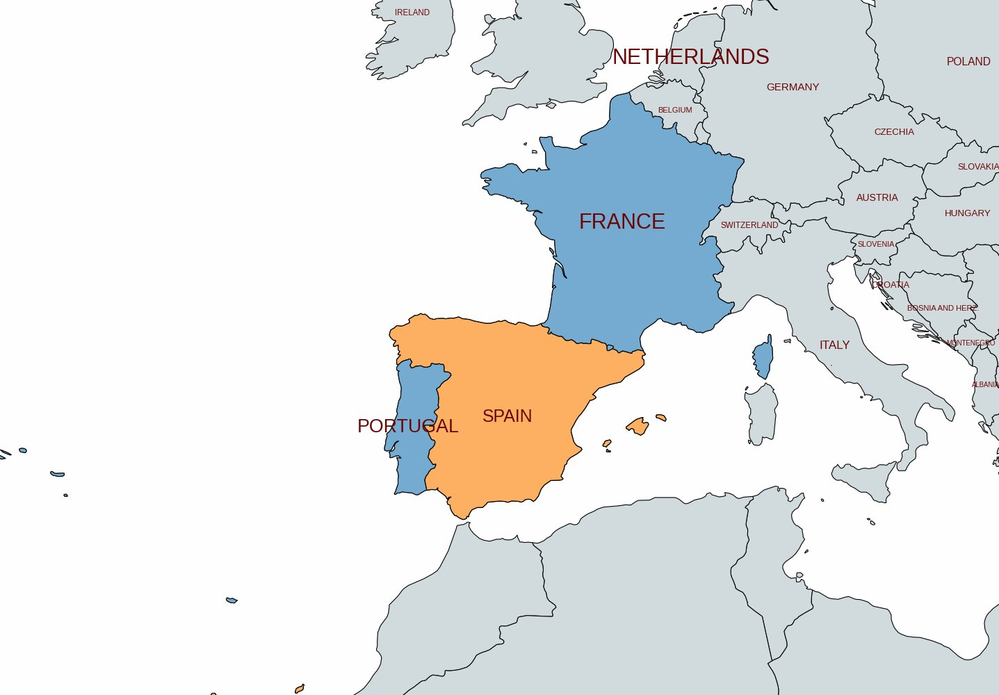
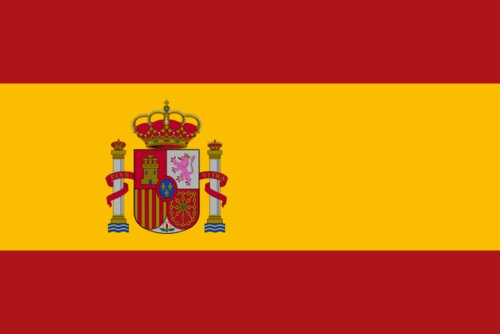
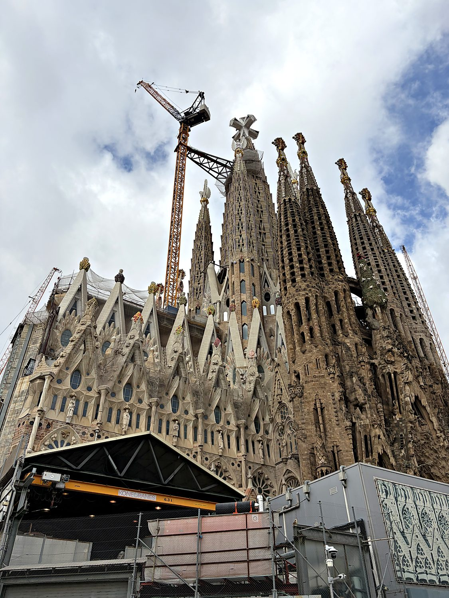
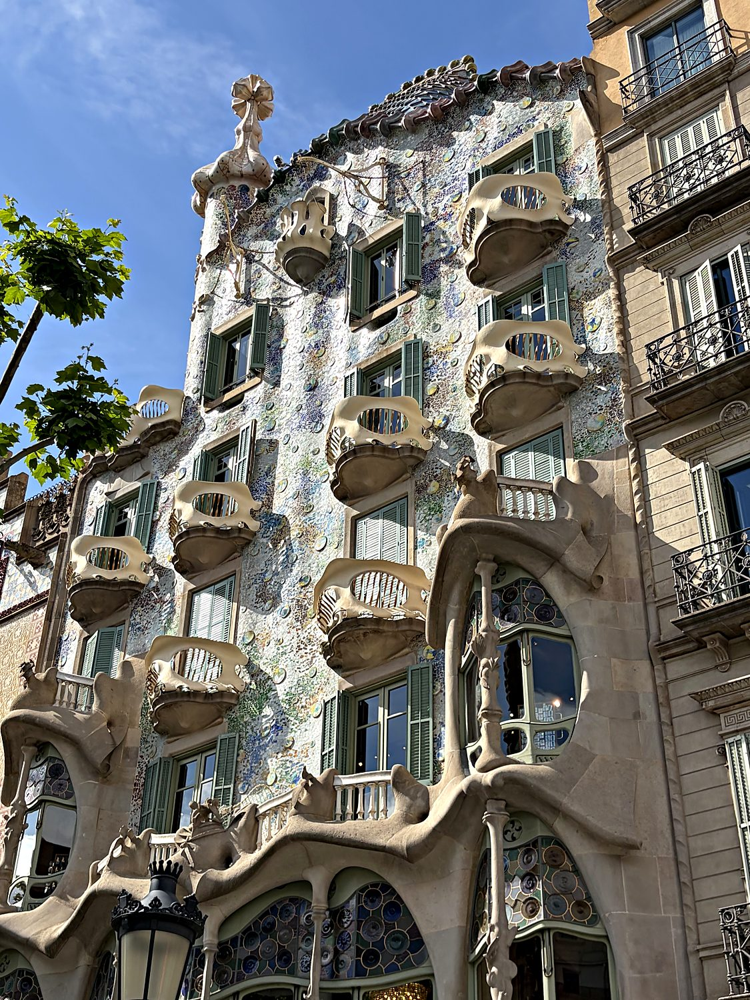
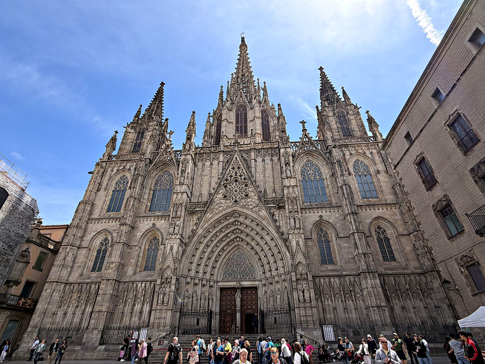

I visited Barcelona in May 2026, with far too little time and far too much to see. Barcelona resolved this scheduling problem by simply being so relentlessly gorgeous that you stop caring about your itinerary. It is a city that seems to have been designed by a committee of geniuses who flatly refused to speak to one another: Roman engineers, medieval stonemasons, and, above all, the deranged and magnificent Catalan architect Antoni Gaudí, whose buildings look less like they were constructed than like they were grown, or possibly hallucinated. I attempted to see the entire city in roughly four hours, in between tutoring calls conducted from park benches and bus stations. This plan of gargantuan stupidity nonetheless yielded Roman ruins, a Gothic cathedral, a fistful of Gaudí masterpieces, and the lasting conviction that I would simply have to come back. I then climbed the hill of Montjuïc to the grand Palau Nacional, pictured above, and gazed out over one of the most beautiful cities in Europe.
Barcelona is the capital of Catalonia, and it is important to grasp from the outset that many of its residents would gently but firmly object to being called simply “Spanish” at all. Catalonia has its own language, its own flag, its own fierce identity, and a long-running independence movement that periodically brings the region to a boil. This distinctiveness stretches back more than a thousand years, to when Barcelona was the seat of the powerful medieval Crown of Aragon, a Mediterranean trading empire in its own right. Roman walls and temple columns hide inside the medieval Gothic Quarter; the elegant nineteenth-century grid of the Eixample unfurls around them. Scattered everywhere is the Modernisme, the Catalan Art Nouveau, that turned the city into an open-air museum of some of the most joyfully bizarre architecture ever built.

Spain's history is among the richest and most consequential in the Western world. Hispania was one of the Roman Empire's most prized provinces. Then, for nearly eight centuries, much of the peninsula was Al-Andalus, a sophisticated Muslim civilization whose scholars, poets, and architects made cities like Córdoba and Granada among the most advanced in medieval Europe. The Christian kingdoms clawed the peninsula back over the long, slow campaign known as the Reconquista, which reached its climax in the extraordinary year of 1492. This was when the last Muslim stronghold of Granada fell, the Jews were expelled, and a Genoese sailor named Columbus, financed by the Spanish crown, blundered into a pair of continents he mistook for Asia. The wealth that followed built the first truly global empire, the one on which the sun famously never set. It sparked a golden age of conquest, silver, and Cervantes that Spain has been reckoning with, gloriously and painfully, ever since.

That empire eventually crumbled, and the twentieth century brought Spain to one of its darkest passages. In 1936 the country tore itself apart in a brutal civil war, which ended with the victory of the fascist general Francisco Franco, who ruled as dictator until his death in 1975. Franco was especially ruthless toward Catalonia, which had resisted him fiercely. He banned the public use of the Catalan language, suppressed its culture, and set out to grind the region's identity into a single, uniform Spain. This effort failed so utterly that Catalan is today more vibrantly alive than ever. Since Franco's death, Spain has pulled off one of the modern era's most impressive transformations, rebuilding itself into a thriving democracy and a pillar of the European Union. The question of Catalonia's place within it remains, to this day, gloriously unresolved.
There is no building on Earth quite like the Sagrada Família, Gaudí's colossal, still-unfinished basilica. It has been under construction since 1882 and is, if you squint at the cranes in this photo, very much still a work in progress. Gaudí poured the last decades of his life into it, and when he was killed by a passing tram in 1926, only a fraction was complete. The work has continued, on and off, ever since, funded entirely by donations and ticket sales, and is optimistically projected to finish sometime in the coming years, roughly a century and a half after it began. To stand beneath it is to feel slightly unwell in the best possible way: its towers drip and bristle like a melting sandcastle crossed with a coral reef, and its façades crawl with sculpture. The whole impossible thing looks to have been designed by someone who studied every cathedral in Europe and concluded, politely, that they simply had not gone far enough.

Gaudí's genius was hardly confined to churches. Casa Batlló, one of several extraordinary houses he built along the grand avenues of the Eixample, is known locally as the “House of Bones”. A single glance explains why: its balconies resemble skulls, its supporting pillars look unnervingly like femurs, and its shimmering, scaled roof evokes the back of a sleeping dragon, complete with a turret standing in for the lance of Saint George. It is the sort of building that should not work at all and yet grows more delightful the longer you look at it. Gaudí regarded the straight line with suspicion, reportedly considering it a creation of man rather than of God, and banished it almost entirely; the result is architecture that ripples, curves, and glows.

For all of Gaudí's exuberance, my favorite corner of Barcelona was its oldest. The Barri Gòtic (Gothic Quarter) is a labyrinth of narrow medieval lanes coiled around the soaring Barcelona Cathedral, whose spiky fourteenth-century façade seems to gather all the drama of the Middle Ages. Wander a few streets in any direction and you trip over the ancient walls and temple clusters of Barcino, the Roman city that started it all. It is this astonishing depth that makes Barcelona so much more than a pretty face: a city where, in the span of a single afternoon, you can lay a hand on a Roman wall, crane your neck at a Gothic cathedral, and stand slack-jawed before a church that appears to have been beamed in from a fever dream. All of it feels, unmistakably and proudly, Catalan.
